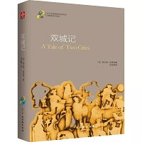
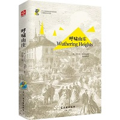
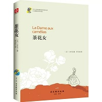
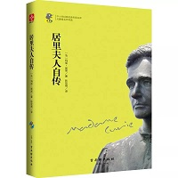
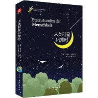
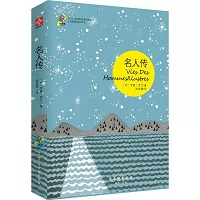
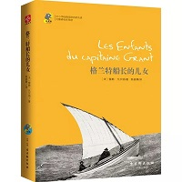
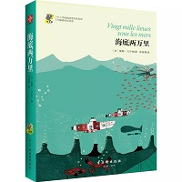
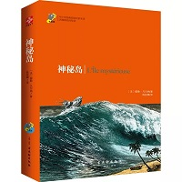
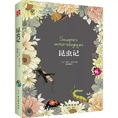

《双城记》是英国作家查尔斯狄更斯所著的一部以法国大革命为背景所写成的长篇历史小说，情节感人肺腑，是世界文学经典名著之一。围绕着马奈特医生一家和以德发日夫妇为首的圣安东尼区展开的，把冤狱、爱情与复仇三个互相独立而又互相关联的故事交织在一起，情节错综复杂，富有戏剧性。

《呼啸山庄》讲述了一个爱情与复仇的离奇故事。呼啸山庄的主人老恩肖带回一个身份不明的吉普赛男孩，取名希斯克利夫。小男孩夺去了主人对长子亨得利及女儿凯瑟琳的宠爱，遭到亨得利的怨恨，但与凯瑟琳日久生情。老恩肖死后，儿子继承山庄，希斯克利夫被贬为奴仆。而凯瑟琳尽管深爱希斯克利夫，却为了金钱和地位，嫁给了富有、英俊的画眉田庄主人埃德加•林顿。希斯克利夫在暴风雨之夜愤而出走，三年后回到呼啸山庄，开始了疯狂报复……

小仲马的第一部扬名文坛的力作，故事讲述了一个青年人与巴黎上流社会一位交际花刻骨铭心、感人至深的爱情故事，抒写了女主人公玛格丽特对真正爱情的渴望与执着，造就了一段散发着不朽魅力的爱恋。这部永恒的爱情经典歌颂着高贵的灵魂与人性之美，同时也毫不留情地揭露了法国七月王朝上流社会的糜烂生活。

这本书是人类文明史上伟大的女科学家居里夫人的自传作品，共分为两个部分：第一部分，居里夫人真实地记述了自己通过刻苦努力走向科学之路的传奇历程；第二部分是居里夫人为丈夫皮埃尔•居里撰写的传记，居里夫人以无限深情的笔触记录了两人在科学领域并肩战斗的美好时光。

本书是茨威格的传记名作之一，共收入他的历史特写12篇，展现了12个惊心动魄的决定世界历史的瞬间。从太平洋的发现、拜占庭王朝的陷落到《马赛曲》的诞生；从拿破仑的滑铁卢、横跨欧美洋底的电缆到南极探险，涵盖了人类近现代史上关于地理大发现、战争、音乐、财富、荣誉、科研、自由、探索等各领域的转折性事件。

《名人传》这部“英雄交响曲”般的人物传记是世界传记文学作品中的传世经典。作者用激昂的文字刻画了三位不同领域的旷世奇才：一个是在痛苦中激发天才的英雄——贝多芬，一个是赋予岩石生命的英雄——米开朗琪罗，一个是打破宁静生活以安抚心灵的英雄——托尔斯泰。不同的人生经历，却造就了相同的成功与辉煌。

本书的故事发生在1864年，游船“邓肯号”的船主格里那凡爵士在一次偶然当中，得到了两年前遇险失踪的苏格兰航海家格兰特船长的线索。为了搭救落难的格兰特船长，格里那凡爵士自行组织旅行队，带着格兰特船长的儿女，一起踏上了寻找格兰特船长的旅程。

本书讲述了一个险象环生而又美妙绝伦的海底旅行的故事。法国博物学家阿罗纳克斯教授与同伴在参与追捕海上“怪物”时，不幸被这只“怪物”——由尼摩艇长指挥的潜水艇俘获，从此便跟随这位神秘而充满智慧的尼摩艇长开启了漫长的海底旅程。

本书的故事发生在美国南北战争时期，有五个被困在南军城中的北方人，找到良机利用热气球摆脱了窘境，中途却被风暴吹落在一个荒岛之上，然而他们并未向命运妥协，而是以集体的力量克服了重重困难，在岛上安顿了下来，开启神秘荒岛求生之旅……

《昆虫记》是法国昆虫学家法布尔倾其一生心血著成的科学巨著，在他的笔下，小小的昆虫是如此奇妙有趣、充满活力。他以生动细腻的笔触讲述了昆虫的种类、特征、习性和婚习，将一部严谨优美的科普文学作品完美呈现。